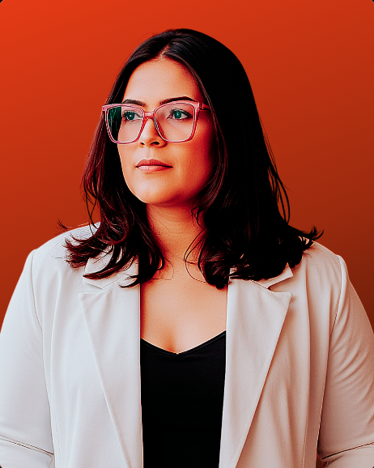

Estrateg[IA]
A IA tira o gestor da saúde do operacional e devolve ele pra estratégia.

Kethllyn
Rosa
Kethllyn
Criei o Estrateg[IA] porque vi de perto um problema: gestores da saúde presos no operacional, sem tempo de pensar em estratégia e sem tempo de virar especialistas em IA.
Uso inteligência artificial aplicada à estratégia pra construir agentes, frameworks e ferramentas que tiram o gestor do operacional e devolvem ele pro que importa: decidir, crescer e cuidar melhor dos pacientes.
Ensino o básico de graça no YouTube, ofereço skills da Claude prontas pra usar hoje e crio agentes personalizados pra quem prefere que eu monte tudo.
O gestor da saúde está preso no operacional, sem tempo de virar especialista em IA. Eu construo o atalho: ensino o caminho e entrego as ferramentas prontas.
Tempo de volta
A IA assume o repetitivo pra você voltar a decidir e crescer.
Clareza estratégica
Frameworks que tiram a decisão do achismo e colocam no dado.
Ferramentas prontas
Agentes e skills da Claude que você usa hoje, sem montar do zero.
Três camadas,
um ecossistema.
Eu ensino o básico no canal → você vê que funciona → escolhe fazer sozinho com os agentes prontos, ou pede pra eu montar pra você.
No canal, do zero ao avançado
As aulas sobem uma a uma. Inscreva-se e acompanhe, é tudo de graça.
Fundamentos de IA aplicada
Criar um SaaS do zero
Configurar e criar agentes
Automatizar o operacional
Dashboards e relatórios com IA
VOCÊ PODE, SE QUISER.
Do canal ao resultado
Assiste o canal
Você se inscreve no canal e acompanha as aulas que vão ao ar.
Vê que funciona
Aplica o que aprendeu e sente o operacional diminuir.
Escolhe o caminho
Faz sozinho com os agentes prontos, ou pede pra eu montar.
Tempo de volta
A IA roda o operacional. Você volta a decidir e crescer.
Eu monto pra você
toque pra ler maisComece hoje, do seu jeito
Pacote de Skills
dos Gestores
8 skills da Claude pro dia a dia do gestor da saúde, prontas pra usar:
Crie seu SaaS
do zero
O curso completo de como construir um SaaS pro seu negócio com IA, da ideia ao produto no ar, mesmo sem saber programar.
Precisa de algo
só seu?
Eu desenho e construo agentes e skills sob medida pro seu negócio de saúde, do diagnóstico ao deploy, com suporte de verdade.
Gestores da saúde
"Eu vivia perdida em planilha. A skill de relatórios me entregou os números prontos e eu voltei pra estratégia da clínica."
"Achava que IA era coisa de empresa grande. Comecei pelas aulas grátis e em uma semana montei minha primeira skill sozinho."
"A skill de gestão organiza meus indicadores. Começo o dia sabendo onde olhar, não no escuro."
"A Rosa montou tudo pra mim. Entreguei o problema e recebi as skills rodando, integradas ao meu dia a dia."
"Cortei horas de relatório manual por semana. O time parou de viver no operacional e começou a crescer."
"Conteúdo direto ao ponto e sem enrolação. Finalmente entendi onde a IA encaixa na gestão de saúde."

Rosa Kethllyn
Criei o Estrateg[IA] porque vi de perto um problema: gestores da saúde presos no operacional, sem tempo de pensar em estratégia, e sem tempo de virar especialistas em IA.
Uso inteligência artificial aplicada à estratégia pra construir agentes, frameworks e ferramentas que tiram o gestor do operacional e devolvem ele pro que importa: decidir, crescer e cuidar melhor dos pacientes.